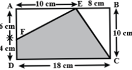

- 30
- 21
- 27
- 42
consider A=Sum of multiples of 7 between 21 & 49
i.e. 28+35+42=105
now, consider B=biggest common factor of 25 and 30 is 5
so, A/B=105/5=21
- 322
- 420
- 134
- 142
5 × (2 × 34) ÷ 6 + 7 – 8
= 5 × (2 × 81) ÷ 6 + 7 – 8
= 5 × 162 ÷ 6 + 7 – 8
= 5 × 27 + 7 – 8
= 135 + 7 – 8
= 142 – 8 = 134

- 121 cm2
- 110 cm2
- 124 cm2
- 142 cm2
Area of shaded portion = Area of rectangle
ABCD−{Sum of area of△EAF and△EBC}
=[(18×10)−{12×6×10+12×10×8}]
=[180−(30+40)]=(180−70)=110 cm2
- 6 m
- 3 m
- 6 m
- 5 m
Area = 25π m2
We know that area of a circle = πr2
Hence, we can write,
25π = πr2
25 = r2
Hence, r = 5 m
Therefore, the radius of the circle is 5 m
- 3252
- 5232
- 3825
- 4212
The sum of decimal places in numerator and denominator being the same, decimal point can be removed
(625x729x289) / (17x25x81) = 3825